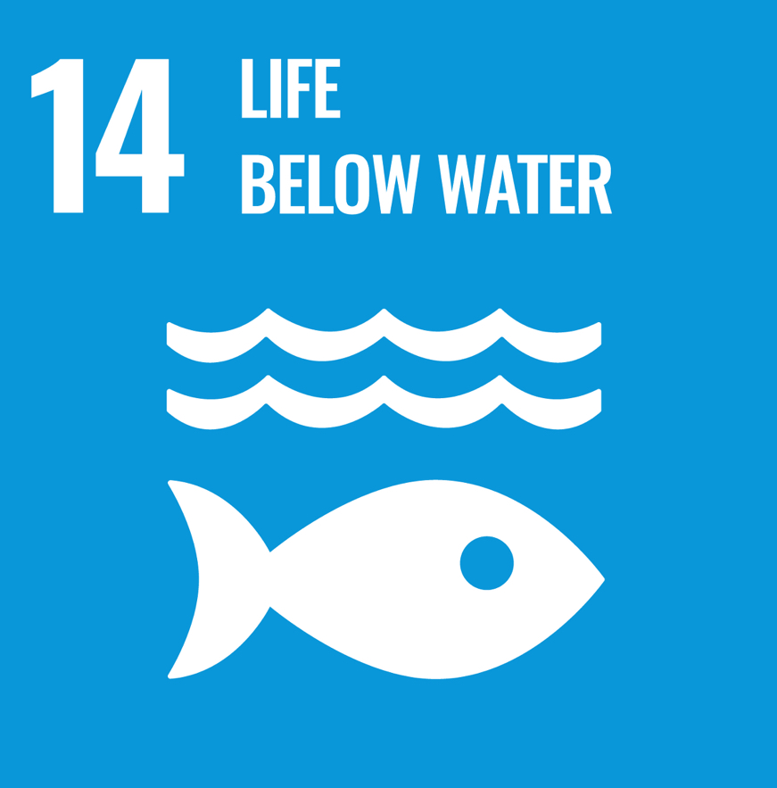
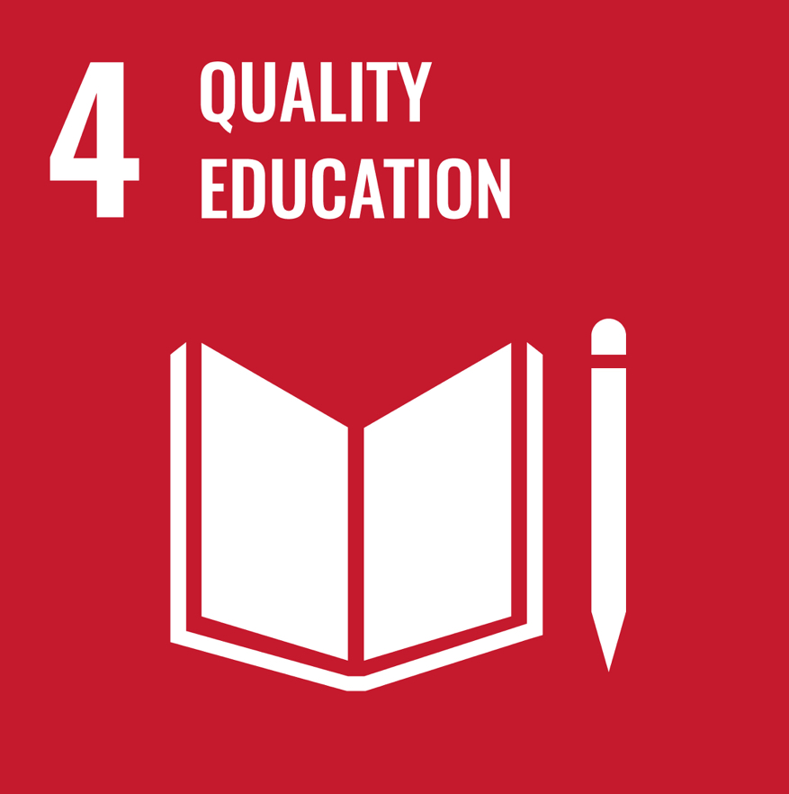
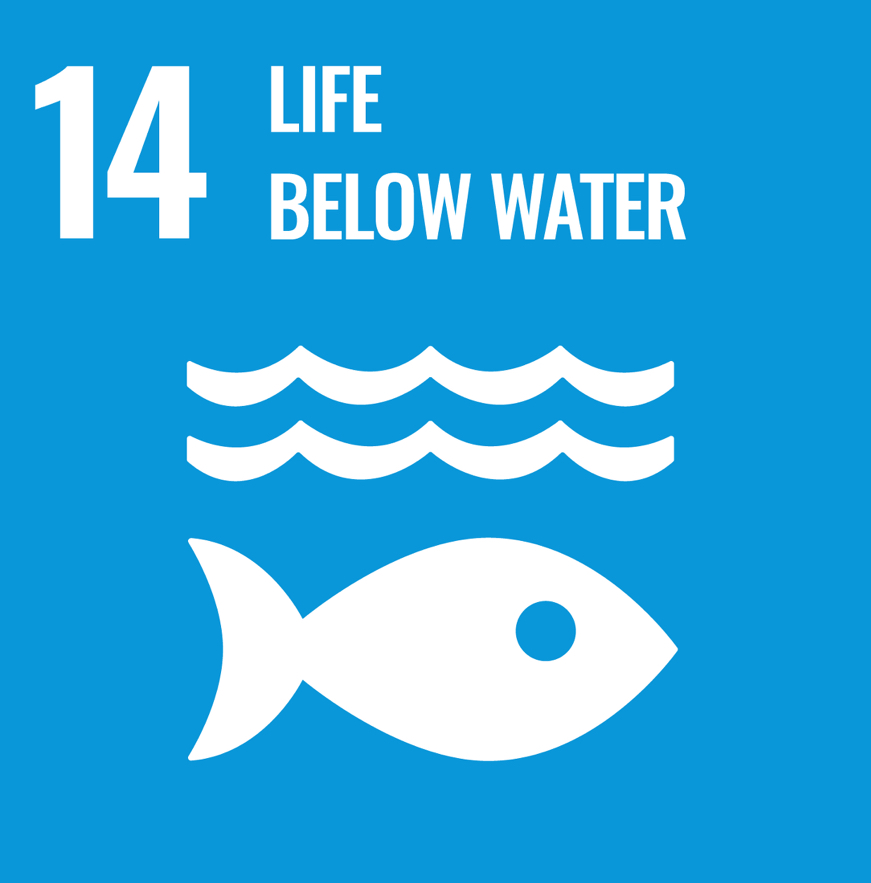
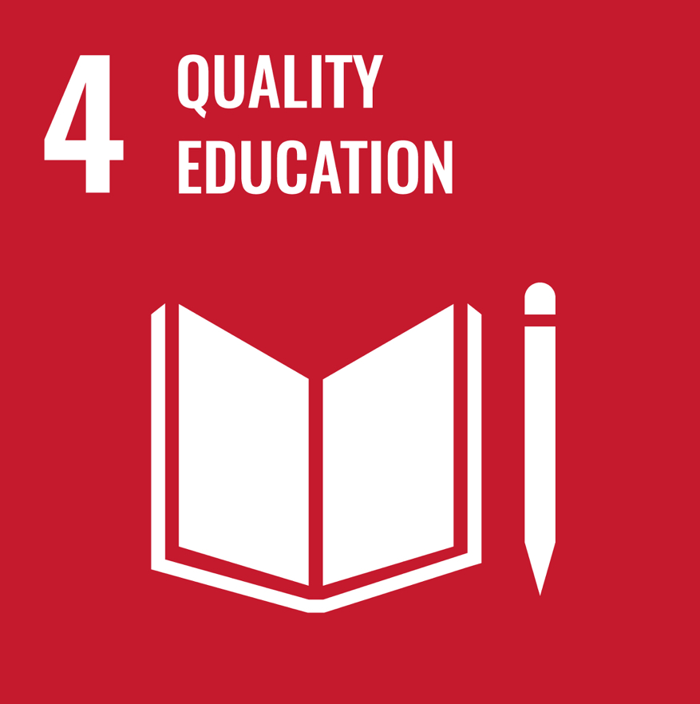

책임있는 소비와 생산이란?

UN-SDGs(지속가능발전목표) 12번은
지속가능한 소비 및 생산 양식 보장을 목표로 합니다
모든 국가들의 ‘지속가능 소비와 생산을 위한
10개년 계획’ 이행, 자연자원의 지속가능한 관리
및 효율적 사용, 음식물 쓰레기 절반으로 감소,
생산 및 공급망에서 발생하는 식량 손실 감축,
화학물질과 폐기물 방출을 획기적으로 감소를
목표로 합니다.


 


